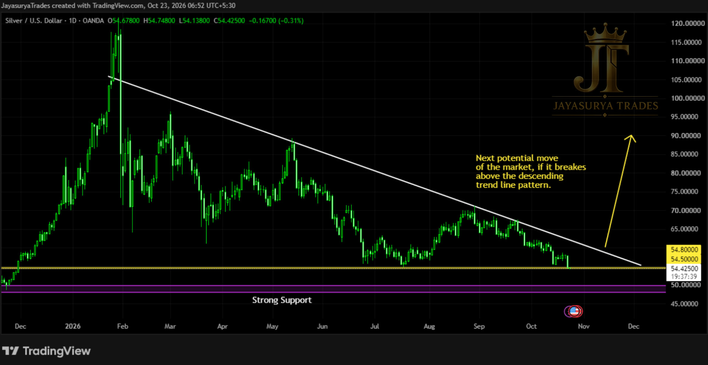

For this Friday Market Focus, I am reviewing Silver (XAGUSD). In our last Friday market focus analysis, we noted that the price was going to fall toward the support level zone around 54.5 to 54.8. That is exactly what has happened now, with the price reaching this targeted zone.
What we need to wait for now is a candle close pattern. If a candle closes below this zone, it can push the market downwards toward the stronger level of support.
Current Behavior: Price has reached the immediate support zone of 54.5 to 54.8 as anticipated.
Immediate Condition: Wait for a daily candle close below 54.5 to 54.8 to confirm downside continuation.
Stronger Support Range: 48 to 50 (not an ideal place for sell entries due to strong underlying support nearby).
Bullish Scenario: Wait for the market to break and close above the descending trend line pattern in the daily time frame for a new bullish momentum.
Approach: Stay out of the market rather than forcing sell entries here, unless handling aggressive individual strategies.

Market Update — Reaching the Support Zone
The projected move from our previous analysis played out precisely, bringing Silver right into the 54.5 to 54.8 support zone. As price interacts with this crucial level, patience is required before making any directional commitments.
We need to wait for the candle close first of all to decide. A valid candle close below the 54.5 to 54.8 range is required to confirm further downward movement.
Key Levels to Monitor
While a breakdown could open a path toward the stronger support range of 48 to 50, this is currently not the ideal place to look for fresh sell entries because of the strength of the underlying support below.
Potential Expectations & Entry Conditions
The market has been forming a descending trend line pattern. To look for buy entries and participate in a new bullish momentum, we need to wait for the market to break and close above the descending trend line pattern with a daily time frame candle close.
Until then, it is better if we stay out of the market instead of looking for sell entries in a tight support zone. Those who are aggressive traders can handle their own strategies, but this is the overall structural view of how the market behaves at these crucial levels.
Key Takeaways
- Silver price has reached the anticipated support zone around 54.5 to 54.8.
- A candle close below this zone is required to confirm a push toward the stronger support range of 48 to 50.
- Current levels are not ideal for new sell entries due to strong nearby support underneath.
- To look for buy entries, we await a daily candle close above the descending trend line pattern.
- Remaining on the sidelines until confirmation is favored over forcing trades, keeping risk managed.
The plan for Silver remains straightforward: observe how price reacts around the 54.5–54.8 boundary, wait for confirmation candles, and avoid premature entries.
Below 54.5–54.8 on close: potential path toward 48–50.
Above descending trend line on daily close: potential signal for new bullish momentum.
Until then: patience and observation.
One day. One market. One focused analysis.
Levels. Structure. Scenarios. Confirmation.
No hype. Just how the market behaves.
Watch. Wait. Confirm.
Legal Disclaimer
All chart comments, structural patterns, volumes, and price action layouts discussed on this platform represent the personal opinions and historical chart observations of the creator at Jayasurya Trades. The content provided here is strictly for general informational and investor educational purposes only. It does not constitute, and must never be interpreted as, investment advice, stock recommendations, or direct buy/sell tips. The creator is NOT a SEBI-registered Research Analyst or Investment Advisor. Trading in securities and derivatives involves substantial market risk. Viewers are strongly urged to conduct their own independent technical research and consult a certified, SEBI-registered professional before deploying capital. Jayasurya Trades assumes no liability or financial responsibility for any personal trading outcomes, losses, or execution decisions made by the audience.